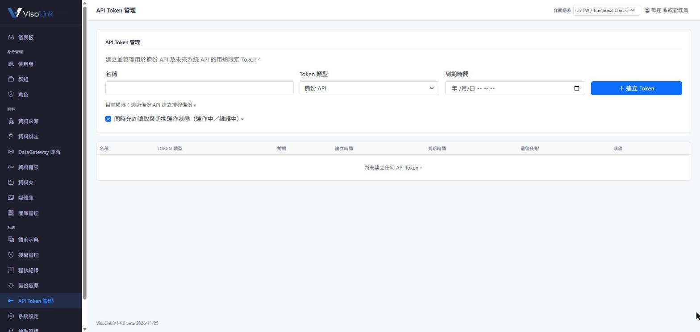

API Token Management
為核准的系統整合建立具用途與期限的存取憑證，並在不再需要時立即撤銷。
瀏覽 API Token 清單

- 開啟「系統 → API Token Management」。
- 以名稱、用途、到期日及狀態辨識目標 Token。
- 定期檢查即將到期或不再使用的項目。
建立 API Token
- 名稱
- 以系統、排程與用途命名。
- Token Type
- 只選擇整合需要的用途類型。
- Expires At
- 依整合期間設定到期日，並預先安排輪替。
- 在 API Token 管理頁上方輸入可辨識用途的名稱，選擇 Token 類型（目前為「備份 API」）。
- 給備份中心使用、需要在備份時自動切換維護中時，勾選「同時允許讀取與切換運作狀態（運作中／維護中）」。
- 設定符合整合期間的 Expires At。
- 確認用途後點「建立 Token」。
Token 出現在清單，名稱、類型、到期時間與狀態正確。
一個整合用途使用一個 Token，方便個別到期、稽核與撤銷。
複製新建立的 API Token
立即複製完整 Token 只顯示一次
安全保存存入核准的機密管理工具
完成整合測試後關閉顯示視窗
- Token 建立成功後，立即使用複製按鈕取得完整值。
- 存入核准的密碼或機密管理工具。
- 完成整合設定後關閉視窗，且不要把 Token 放入截圖、文件或原始碼。
整合測試成功，Token 已安全保存且未出現在文件或原始碼。
完整 Token 只會顯示一次；遺失時應撤銷舊 Token 並重新建立。
撤銷 API Token
- 先確認使用該 Token 的整合與影響範圍。
- 在清單選擇撤銷並閱讀確認訊息。
- 確認後立即測試相關排程或整合服務。
- 如為輪替，先部署新 Token，再撤銷舊 Token。
撤銷後使用該 Token 的呼叫會立即失去授權。